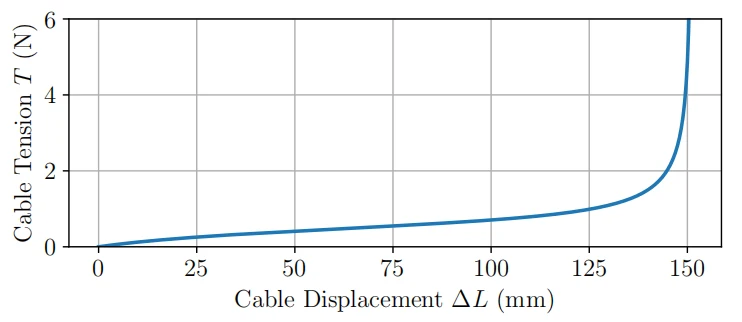
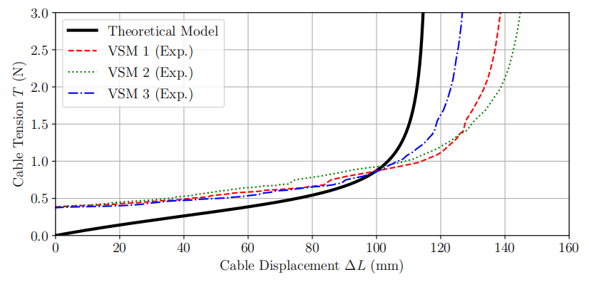
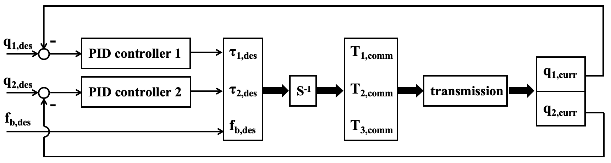

<!doctype html>
<html lang="en">
<head>
  <meta charset="utf-8">
  <meta name="viewport" content="width=device-width, initial-scale=1">
  <meta name="description" content="Novel Transmission Employing Kinematic Stiffening and N+1 Actuation">
  <meta name="theme-color" content="#fafbf8">
  <title>Novel Transmission Employing Kinematic Stiffening and N+1 Actuation — Yiwen Gao</title>
  <link rel="icon" href="icon.png" type="image/png">
  <link rel="stylesheet" href="style.css">
</head>
<body>
  <a href="#main" class="skip">Skip to content</a>
  <header class="site-header">
    <div class="wrap header-inner">
      <a class="brand" href="index.html">Yiwen Gao</a>
      <nav aria-label="Main navigation"><a href="index.html">Projects</a><a href="about.html">About</a><a href="cv.html">CV</a></nav>
    </div>
  </header>
  <main id="main" class="wrap">
  <article class="project portfolio-project">
    <a class="back" href="index.html"><span aria-hidden="true">←</span> All projects</a>
    <header class="page-head"><h1>Novel Transmission Employing Kinematic Stiffening and N+1 Actuation</h1><p class="project-byline">Yiwen Gao, Connor Yako, Shenli Yuan, J Kenneth Salisbury</p><p class="project-byline">Summer Research, Salisbury Robotics Lab, Stanford University</p></header>
    <figure class="project-figure main-figure"><a href="vsm-prototype.webp"></a><figcaption>Figure 1: Prototype of the 2-DoF N+1 cable-driven transmission</figcaption></figure><section class="project-section"><h2>Project Overview</h2><p>This study addresses the critical conflict in robotic design between high stiffness for precision and com￾pliance for safety. We developed a novel method to modulate the intrinsic mechanical stiffness of a robotic mechanism, enabling it to transition between a "soft" state for safe human interaction and a "stiff" state for high-load tasks.</p></section><section class="project-section"><h2>Key Innovation: Variable Stiffness Mechanism (VSM)</h2><figure class="project-figure "><a href="vsm-mechanism.webp"></a><figcaption>Figure 2: Working principle of the variable stiffness mechanism. (a) The mechanism in its compliant, low-tension state. (b) The mechanism in its stiff, high-tension state. (c) An annotated diagram identifying the key components.</figcaption></figure><p>The core of this design is a non-linear transmission mechanism based on tension-induced geometric stiffening.</p><ul><li><strong>Working Principle:</strong> A rotating bar with floating pulleys is constrained by a torsion spring. As cable tension increases, the bar rotates, reducing the effective cable length and geometrically in￾creasing the stiffness.</li><li><strong>Result:</strong> This allows for a wide dynamic range of stiffness using simple, passive mechanical com￾ponents.</li></ul></section><section class="project-section"><h2>The Relationship between cable tension (T) and change in cable path length (∆L)</h2><h3>Theoretical Analysis:</h3><figure class="project-figure "><a href="vsm-model.webp"></a><figcaption>Figure 3: Theoretical analysis results</figcaption></figure><h3>Experiment:</h3><figure class="project-figure "><a href="vsm-module-tests.webp"></a><figcaption>Figure 4: Experiment results</figcaption></figure></section><section class="project-section"><h2>System Architecture &amp; Performance</h2><p>We integrated this VSM into a 2-DoF robotic manipulation using an N+1 cable-driven actuation scheme (3 cables driving 2 joints).</p><ul><li><strong>Hybrid Control Strategy:</strong> The positions of the two joints <i>q</i><sub>1,des</sub>, <i>q</i><sub>2,des</sub> are controlled by PID closed-loop control, while the co-activation force <i>f</i><sub>b</sub> (shared internal tension of the cables) is under open-loop control. Three parameters can be controlled independently.</li></ul><p>The experiment has validated that, by controlling the co-activation force <i>f</i><sub>b</sub>, we can control the system’s overall stiffness. Therefore, the overall stiffness of the system can be controlled indepen￾dently of its position.</p><figure class="project-figure "><a href="vsm-control.webp"></a><figcaption>Figure 5: Control Strategy Diagram</figcaption></figure><ul><li><strong>Experimental Validation:</strong> A physical prototype was fabricated and tested. The results confirmed a 7-fold increase in endpoint stiffness (overall stiffness) and a corresponding shift in the system’s dominant natural frequency under co-activation. This shows the system’s ability to effectively modulate compliance on demand.</li></ul><figure class="project-figure "><a href="vsm-stiffness.webp"></a><figcaption>Figure 6: Experimental results showing the relationship between the overall stiffness (<i>K</i><sup>∗</sup>) and the com￾manded co-activation force (<i>f</i><sub>b</sub>).</figcaption></figure></section>
    <div class="project-next">
      <a href="index.html">← All projects</a>
      <a href="konka-head.html">Next: Head and Neck, Robot ‘Konka-1’ →</a>
    </div>
  </article></main>
  <footer class="wrap footer"><span>© 2026 Yiwen Gao</span><a href="mailto:gyiwen618@gmail.com">Email <span aria-hidden="true">↗</span></a></footer>
</body>
</html>
